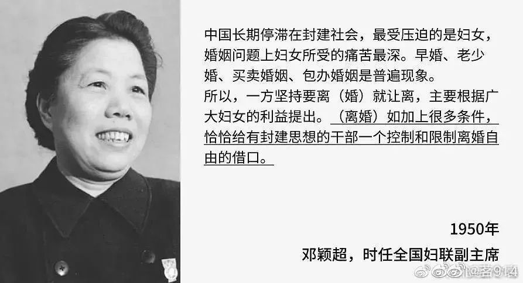

热点2022年7月|各行各业中熠熠生辉的女性光芒

编辑：杜舒懿
数据来源：闪闪
0
1科技行业中的女性：风投如何帮助缩小东南亚的性别差距
据波士顿咨询集团称，近年来风险投资在女性主导的初创公司投入了更多资金，但女性在科技领导层中的代表性仍然不足。女性几乎占美国劳动力的一半 (47%)，但她们在科技领域的领导职位中所占比例不到三分之一 (28%)。
全球科技公司仍遭受严重的性别失衡，咨询公司埃森哲和非政府组织“Girls Who Code”的一项研究表明，现在该行业的女性比例低于1984年。科技行业在争取性别平等方面仍面临重大挑战，法新社报道称一些公司存在性别歧视和有毒文化。
放眼东南亚，该地区在科技领域的性别代表性已经开始强劲，甚至超过了英国和美国等一些成熟的西方市场。波士顿咨询集团和新加坡信息通信媒体发展局于2020年10月发布的一项研究显示，女性占东南亚科技行业劳动力的32%，超过了28%的全球平均水平。除了更加强调多样性和包容性之外，有些人甚至设立了以女性为重点的基金，以支持和投资女性主导的创业公司，其中一些是出于声誉压力。
总部位于新加坡的Vertex Ventures Southeast Asia and India公司的执行合伙人 Joo Hock Chua表示，我们的投资团队是多元化的——拥有广泛的专业和个人背景，并且女性代表比例很高（50%）,我们不会为性别多样性设定内部投资基准。我们认为，对于我们资助的有能力的女性企业家来说，我们投资她们不是因为我们试图达到特定的配额，而是因为她们和男性同行一样优秀。除了女性企业家，这家拥有10亿美元管理资产(AUM)的风险投资公司还要求其投资组合公司报告其业务中女性劳动力的百分比，并提醒他们重视性别多样性。
另一家风险投资公司Gobi Partners已与总部位于印度尼西亚的风险投资公司Ozora Yatrapaktaja合作，于4月在印度尼西亚为女性初创企业启动了1000万美元的种子基金，该公司注意到新冠疫情大流行对女性的影响，并决定加紧支持女性科技企业家。Quest Ventures公司表示一直支持女性企业家，超过36%的Quest投资组合公司由女性创始人领导。
在给女性科技企业家和创始人的建议方面，Gobi的Ng提醒女企业家拥有强大和支持性网络的重要性。她说“对于女企业家，我们建议您始终投入时间建立强大且支持性的导师和同行网络，这可以帮助培育您的业务并建立一个与您有共同愿景的多元化团队。”Quest Ventures的Ng对女性科技企业家的建议直截了当：“承担风险并保持自信，女企业家应该有信心，敢于冒险，即使她们在一个由异性主导的领域里打球。”
（来源：TechNode Global；翻译：paper）
80.2%农村女性没有宅基地，30.4%农村女性没有土地承包经营权
“男尊女卑”“重男轻女”的传统规则使得妇女对于家庭共有财产的知情权、参与权和决策权无法得到保障。而绝大多数农村妇女离婚后如果不能及时再婚，就会陷入“房无一间、地无一垄、钱无一分”的悲惨境地。同时，集体经济组织成员认定过程中妇女权利易受损。
很多地方在土地确权、集体产权制度改革以及正度补偿分配过程中，由于现有法律和政策都没有明确村集体经济组织成员认定的办法，很多地方将集体经济组织成员资格认定的工作交由村委会，通过村民会议或者村民代表会议决议的方式进行，使处于弱势地位的农村妇女易因婚嫁丧失成员权利。
这些村规民约或利益分配方案违反男女平等宪法原则的规定，却没有有效的违法纠错机制。为此，2016年下发的《中共中央国务院关于稳步推进农村集体产权制度改革的意见》明确规定的“成员身份的确认既要得到多数人认可，又要防止多数人侵犯少数人权益，切实保护妇女合法权益”有待进一步落实。
“全国妇联委托农业部农研中心在固定观察点所做的抽样调查显示，有30.4%的女性在土地承包经营权证上没有登记姓名，有80.2%的女性在宅基地使用权证上没有登记姓名。
科普| 婚嫁失地会加剧农村妇女遭受家庭暴力的风险
一、历史背景：土地承包制度调整
30 年前，中国对农村原有土地制度进行了历史性改革，根据家庭人口规模分配土地并给予承包使用权。农村妇女最初获益于这项政策，因为她们能够像家庭中的其他男性成员一样分得土地，为家庭贡献土地资产。
1983 年中国农村地区进行了第一轮土地承包分配，1984 年党中央规定土地承包期限为 15 年，在此期间，针对家庭户因生丧嫁娶而发生的人口变动，农村对土地进行了相对频繁的调整。例如一名妇女从本村嫁入其他村之后，她在娘家的承包地将被村里收回，而在夫家将重新获得一份承包地，这种土地调整方案使得农村妇女的土地承包经营权因婚嫁而发生变动。但是，土地的频繁调整无法保障农村家庭户的长期土地使用权，农民不愿对农业生产进行大量投入，农业发展受到限制。
为了调动农民对土地的热情，稳定农民的长期预期，1998 年国家出台《土地管理法》，将土地承包期限延长至 30 年，同时减少对土地进行调整的次数与幅度；2003 年《农村土地承包法》正式实施，明确规定“国家依法保护农村土地承包关系的长期稳定”，“承包期内，发包方不得调整承包地”。为了严格实施这一法律条款，不少地方把“增人不增地，减人不减地”作为基本原则。
二、结果
在农村传统的父权制社会结构与从夫居婚嫁模式的文化背景下，延长了的土地承包分配周期事实上损害了妇女的土地权，进而影响其经济赋权，并可能削弱其在婚姻生活中的议价能力和话语权。
1.对已婚女性的影响
对于嫁往外村的妇女而言，尽管其在娘家的承包地未被收回，但由于地域的不便，她们难以继续耕种娘家的土地，而夫家的发包方会以她们仍然占有娘家承包地为由而拒绝为其分配新的承包地；对于出嫁但嫁在本村的妇女而言，村规民约的压力以及来自自家兄弟的阻挠常常会限制她们耕种承包地或者分享土地收益。
对于离婚、丧偶的妇女，若其在夫家的村里有地，那么其土地往往会被收回；而若其在娘家村有地，回到娘家村里她们也很难保证再获得土地的承包经营权。
农村普遍蕴涵着性别歧视的村规民约作为实质上的一种“地方性知识”，是广大村民典型的习惯性生存方式，国家法对妇女利益的保护在这个空间里常常会显得软弱无力。
2.对未婚女性的影响
未婚妇女通常被认为“可能很快出嫁”，因此在初始分配土地时，村里倾向于使未婚男性获得的土地数量超出按人口平均的份额，而未婚妇女的土地数量少于平均份额甚至没有任何土地。例如湖南、浙江等一些地方都曾以减少调整为名，实行“测婚测嫁”的办法，即以一个假设的结婚年龄线来作为测算未婚男女承包土地份额的依据，以致未婚男女承包土地的待遇迥然相异：初始分配使得临近婚龄的男性农民分得一份以上的土地，因为预计他将在未来30 年内娶妻生子；而使得临近婚龄的妇女农民则只能分得一份以下的土地或完全不分，因为预计她将在未来 30 年内出嫁外村。
三、土地对女性的重要性
1.随着城镇化加剧，农村尤其是近郊农村土地征用加剧，土地虽不再是最主要的生产资料，但能带来直接的甚至远高于农业生产的经济利益。因此，妇女名下有土地，在提高其经济收入的同时，更反映出其对经济资源的掌控。
2.对男性的经济依赖被众多学者视为造成妇女遭受贫困、性暴力、非意愿生育、感染性病的关键因素以及其他一系列消极后果的根源。妇女对于土地资源的掌控意味着她们能够为家庭贡献更丰厚的经济收入，这有助于减少她们对于丈夫的经济依赖，改变附属状况，增强独立自主和决策权，从而提高她们在家庭中的地位。
四、农村已婚妇女婚嫁失地与家庭暴力的实证分析
农村已婚妇女平均婚龄为 20.6 年，其中，因婚嫁而失地的妇女平均婚龄仅为 13.7 年，远低于名下有地的妇女，这也从一个侧面说明随着土地承包政策的调整，农村妇女婚嫁失地的可能性在加大。值得关注的是，23%的婚嫁失地妇女其名下虽无土地，但年务农时间超过 9 个月，这个比例甚至要高于名下有土地的妇女。
在控制了农村妇女及其丈夫的人口、社会、经济等特征后，实证回归结果显示，农村妇女因婚嫁失地会加剧其遭受家庭暴力，尤其是被丈夫殴打的风险。婚嫁失地妇女被丈夫殴打的风险要明显高于有地妇女，其与有地妇女相比，被丈夫殴打的风险要高出 49%（模型 2）。
对妇女遭遇来自丈夫家庭暴力整体模型结果（模型 3）也显示，与有地妇女相比，婚嫁失地妇女遭遇来自丈夫各种形式家庭暴力的风险要显著高出26.5%。另外，值得关注的是，“土地在娘家，婆家无法分地”这种隐性失地导致出嫁女虽名下有地但无法获得收益，这也会伤害农村已婚妇女经济赋权，恶化其遭遇丈夫家庭暴力的风险（模型 3）。
妇女受教育程度的提高，可增进其自我保护的能力，显著降低被家暴的风险；而丈夫受教育程度的提高，能降低其对妻子施暴的可能，这说明夫妻文化水平的提高，更容易倡导和谐文明的家庭生活沟通方式。目前农村已婚妇女的受教育程度偏低，平均受教育年限为 6.9 年，要显著低于其丈夫（8.6 年），仅 10%的农村已婚妇女拥有高中及以上学历，大部分人的文化程度为初中（39%）、小学（32%）及文盲（19%）。
职业身份不同，家庭暴力遭遇也有差别：与身为农民的妇女相比，从事管理、技术以及办事人员等职业的农村妇女被丈夫施暴的风险显著降低；相较于丈夫是农民的妇女，丈夫是生产工人的妇女被施暴的概率反而更高。
门当户对的夫妻家暴发生概率更低。娘家家境优于夫家的妇女比娘家家境次于夫家的妇女更可能被丈夫殴打（前者发生比为 1.71，后者发生比为 1.66）；娘家家境次于夫家的妇女比娘家家境优于夫家的妇女更可能被丈夫辱骂（前者发生比为 1.5，后者发生比为 1.35）。
五、结论
从长期来看，启动于 1998 年的第二轮土地承包周期为 30 年，即在 2028 年承包地年限将到期，到期后新政策的制定和实施应该采取积极措施保障农村已婚妇女的土地权益。
从短期来看，政府应采取有效措施，核实目前农村已婚妇女的承包地持有状况，对失地妇女予以一定的经济补偿，并保证补偿款分到个人账户，而非家庭账户，通过这种途径来增加失地妇女的收入从而增强其经济赋权，改善其在家庭关系中的弱势地位。
来源：宋月萍,谭琳,陶椰.婚嫁失地会加剧农村妇女遭受家庭暴力的风险吗?——对中国农村地区的考察[J].妇女研究论丛,2014(01):12-21.
Q1.中新社记者：神舟十三号飞行任务中，首次有女航天员入驻中国空间站。与男航天员相比，女性航天员是如何选拔、训练的？其选拔、训练有何特殊之处？
庞之浩：载人航天任务艰巨，技能复杂，环境比较特殊，有一定风险，所以对航天员的身体条件和心理素质都提出很高要求，女航天员也不例外。男女航天员的选拔与训练标准基本一样，没有针对女航天员的特殊选拔和训练标准。
空间站航天任务比较复杂，所以进行了分工。有飞行专家，也叫航天驾驶员；有任务专家，即航天飞行工程师；甚至还有载荷专家。女航天员现在占整个航天队伍比例一般是10%，从全世界来讲，(女航天员)大部分都是任务专家，这跟女航天员的生理、心理情况有一定关系，比如女性脂肪比较多，平均个头矮、体重轻、有氧运动消耗的能量也低。但也有个别是飞行专家，比如说美国航天飞机第一个女驾驶员和指令长柯林斯。
大量实践和理论研究发现，女航天员有执行太空任务的能力，而且在某些方面感觉更敏锐，心思更细腻，考虑问题更全面，处理问题更注意方式方法，沟通能力更好。在微重力环境下，女航天员的雌激素(水平)和镁的代谢优于男航天员，(体内)铁含量低，所以被认为比较适合长期太空生活，不容易出现铁中毒、血栓、血管痉挛、心律紊乱。
科普 | 研究表明女宇航员更适合领导火星任务
据美国《新闻周刊》网站6月27日报道，一项新的研究显示，女宇航员更适合领导长期太空任务，比如前往火星之旅。报道说，她们表现出更多的相互支持和鼓励，并更能创造积极的环境，而男性领导者更偏好团队精神、忠诚和成就。两种性别在很大程度上仍是任务导向型的。
研究人员分析了来自设在犹他州的火星沙漠研究站的824份指挥官报告。在2009年至2016年这一时间段内，共有27名女性指挥官提交了277份报告，并有49名男性指挥官撰写了541份报告。
研究报告的作者、立陶宛考纳斯理工大学社会学家因加·波波瓦伊特教授说，她的研究结果表明，女性可能更适合长期的太空任务。
她说：“一二十年后，当火星任务开始时，被派往火星的将是混合性别小组。另外，一位女宇航员正在为几年后的登月任务做准备。”她指出，“然而，由于女性在极地考察和太空探索方面的参与度较低，仍缺少关于女性在太空活动中的数据。因此，研究仅对混合性别群体与男性群体的动态进行了比较。”她说：“虽然传统观点认为男性领导者是任务导向型的、女性领导者则更善于交际，但我的研究显示，男性和女性指挥官同样重视任务的完成。他们之间唯一的区别是，女性更经常使用积极的、鼓励性的信息来激励她们的团队。”
截至2021年，在国际空间站投入使用的20年里，只有3位女性担任了指挥官。虽然这个领域正在变得更加多样化，但人们对在孤立、封闭和极端环境下领导层的性别差异知之甚少。
研究小组分析了上述来自男女指挥官的所有报告，这些报告的平均长度为348个单词。在进行了多种类型的分析（包括计算机情绪分析、对报告内容的定性研究以及词频计算）后，波波瓦伊特教授发现了女性和男性指挥官在沟通上的某些差异。
首先，女性报告中正面情绪的得分要高得多，负面情绪得分则低得多。其次，尽管女性指挥官和男性指挥官都表现出任务导向型领导行为，但女性指挥官与她们的团队成员讨论得更加频繁。此外，在这种讨论中，男性指挥官注重团队精神、忠诚和成就，而女性指挥官强调相互支持、鼓励和构建积极环境。第三，调查结果显示，女性指挥官在谈论日常行为时往往会使用不那么具体的词汇。
波波瓦伊特教授说：“这些发现符合如下理论，即女性领导者比男性领导者更善交际、更具社群意识。而且，它与之前的研究结果一样，证明男性和女性领导者的任务导向行为几乎没有什么不同。”
她说，虽然其领导力特征在文化上与男性一致，但女性领导人在社交上更加积极，避免表现出愤怒等消极情绪。这些特征在长期太空任务中更为有用。在这种任务中，长期的孤立、封闭和有限的资源以及人与人之间的冲突可能会危及团队的成功。
波波瓦伊特教授还说：“参与一项模拟太空任务不仅仅关乎冒险、兴奋和发现。执行任务期间，宇航员主要执行单调的任务：做饭、洗碗以及使环境变得干净整洁。在这种环境下，人们需要在没有家人和朋友的情感和心理支持的情况下长期生存。这就是为什么一位关心团队成员情感需求的领导人更具可持续性的原因，尤其是在任务的后期阶段。”
张纯如（Iris Chang），美国华裔女作家、历史学家，祖籍江苏淮安。她是第一位向西方社会披露南京大屠杀惨案真相的华裔女作家。她用一本《南京浩劫：被遗忘的大屠杀》让欧美主流社会开始关注南京大屠杀这段历史。对照历史照片，她将日军当年暴行娓娓道来，面对西方记者的质疑，张纯如眼神坚毅、从容笃定、无畏无惧……
她擅用新颖独特的手法描述华人在中国和美国的生活，揭示鲜为人知的中国历史和美国华人史，她的著作有《钱学森传》、《南京浩劫：被遗忘的大屠杀》、《华人在美国》等。
其中1997年出版的《南京浩劫：被遗忘的大屠杀》描写了日军在南京强奸、虐待、杀害大批中国平民的详情，被纽约时报列为推荐读物，被书评称为年度最佳书籍之一。也正是这本书让欧美主流社会开始关注南京大屠杀这段历史。
而在该书成功出版之后，她又要面对藏在暗处且随时射出的利箭——政治势力和极端人士对她恨之入骨。经常收到威胁的信件和电话，就算经常更换号码，也不敢透露丈夫和孩子的信息。她还曾收到日本右翼分子寄来的带有两枚子弹的信件。
在写作第四本书的过程中，张纯如患上了抑郁症，曾一度不得不住院治疗，此后一直承受着抑郁症的折磨。2004年11月9日，张纯如在美国加州开枪自尽，年仅36岁。
许多学者认为，从《南京大屠杀》到她第四本书写作的美国二战被俘军人受日军虐待的历史，都是尽显人性恶劣、残忍血腥的历史，而这些内容或与张纯如的病因不无关联。
“她想撑起整个的天空，但她的战场无涯，敌人难数……她牺牲了自己。”
华中科技大学社会学院日前发布的一项对25个省（区、市）共计7642人进行的调查显示，与生育之前相比，生育一个孩子使得妻子的就业几率下降约6.6%；继续生育第二个孩子的妻子，其就业几率再次下降9.3%。生育一个孩子将使家庭劳动力市场总收入下降约5.6%；继续生育第二个孩子的家庭劳动力市场总收入再次下降约7.1%。
在近日公开征求意见的《湖南省人口与计划生育条例（修正案草案）》中，“修改依据和理由”一栏中提到：假期过长有可能影响女性就业，从长远看，不利于维护和发展女性权益。朱飞认为，这段话相当中肯，是对待生育客观、理性的说法，并指出，延长产假、增加育儿假等措施可能会导致女性就业更加困难，进而导致年轻人对生育问题更加焦虑。”朱飞说，这些成本全由用人单位负担显然是不现实的，要避免政府释放生育红利、完全由用人单位“埋单”。“政府部门应出台政策，通过财政补贴、税费减免等措施补偿用人单位的成本，共担生育成本，用人单位才能更积极配合这些政策的落地。”
北京义贤律师事务所律师叶明欣表示，目前延长的产假有生育保险可以保障女性休假期间的薪资，但是新增加的育儿假带来的经济成本如何分担，还需进一步明确。
日前，杭州一名22岁女孩连续四五天熬夜加班突发疾病进ICU抢救的消息引发关注。据了解，该女孩刚工作没多久，在一家互联网公司做网络运营工作。
7月27日，极目新闻记者从当事女孩家属处了解到，女孩已于7月26日不幸离世。
女孩父亲也在社交平台留言称：“我的孩子2022年7月26日最终还是抛下我们两个孤苦伶仃的老人，谢谢大家这段时间的帮助，希望所有的孩子们所有的好心人一定要爱护自己的身体，打拼奋斗也要照顾好自己！谢谢大家。”
1950年3月8日，《人民日报》发表了题为《学会本领，做好工作》的社论。这篇社论是邓颖超大姐撰写的。她在社论中要求各级党委和政府要清除轻视妇女的传统观念，重视女干部的培养使用，给她们的学习工作创造有利条件。社论还号召全国妇女干部，学会本领，做好工作，向各行各业进军，自然包括航空领域。
她写道：“只要我们妇女打破自卑感，有信心，有勇气，自强不息，努力学习，坚韧奋斗，我们妇女同男子一样，一切工作都可以做，而且能做得更好。”
邓大姐撰写的社论，对提高妇女的社会地位意义重大，为妇女走上各种工作岗位铺平了道路，也是新中国妇女“飞天”的舆论准备。
